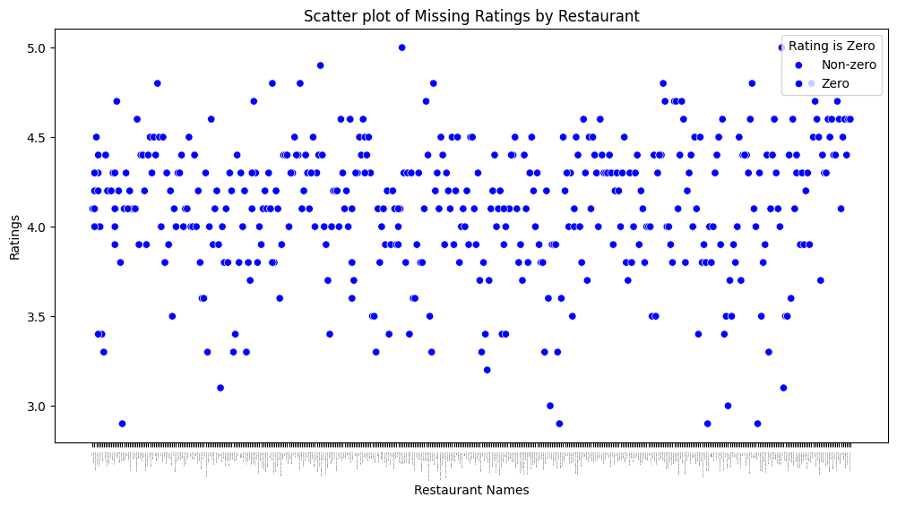
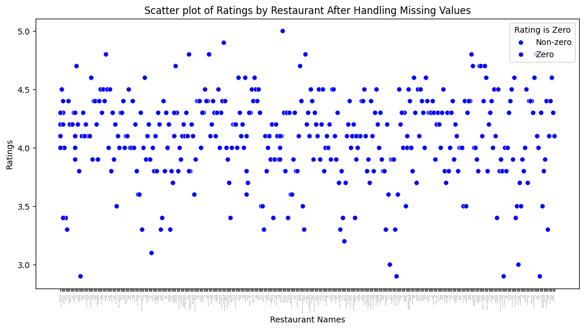
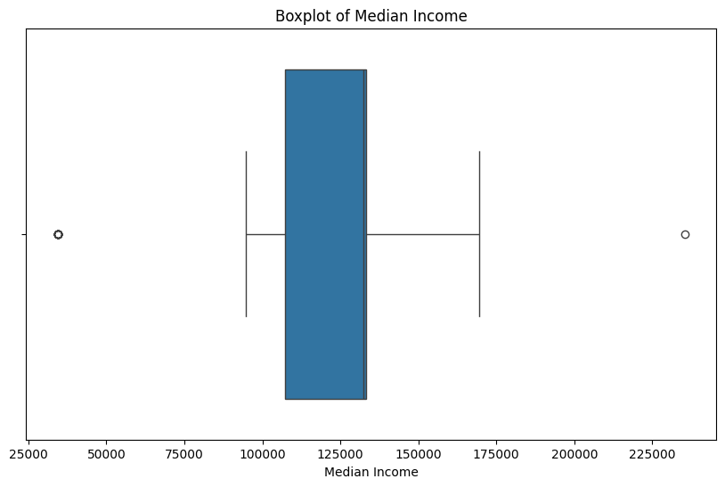
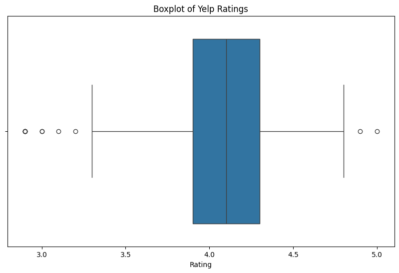
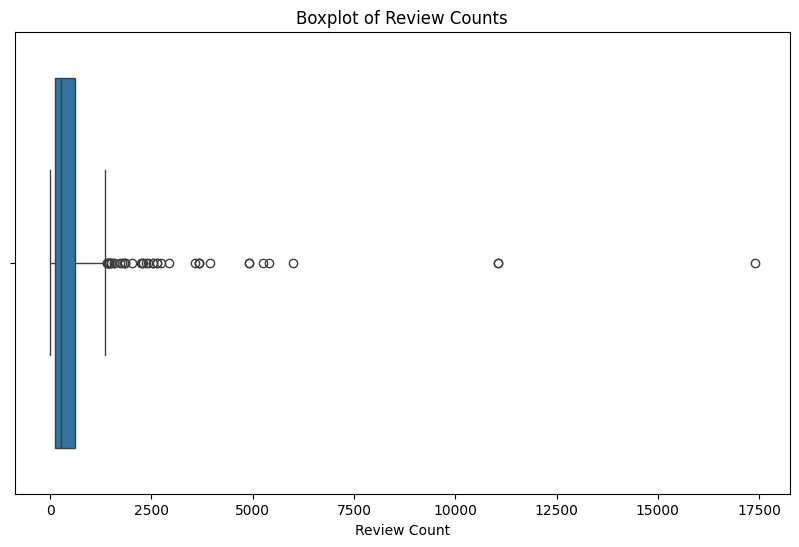
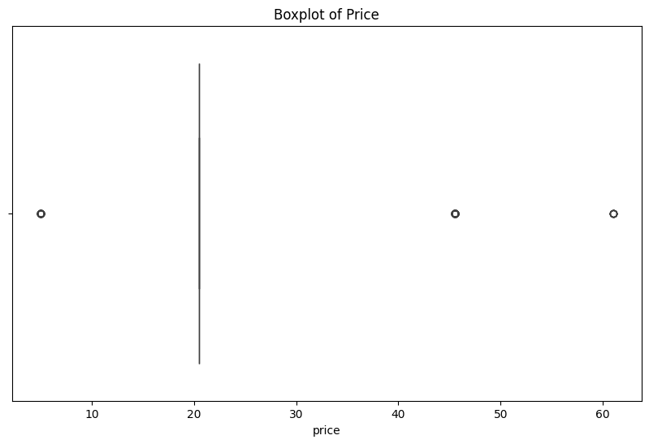
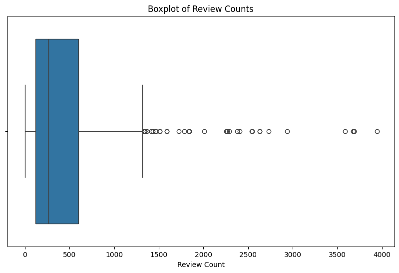
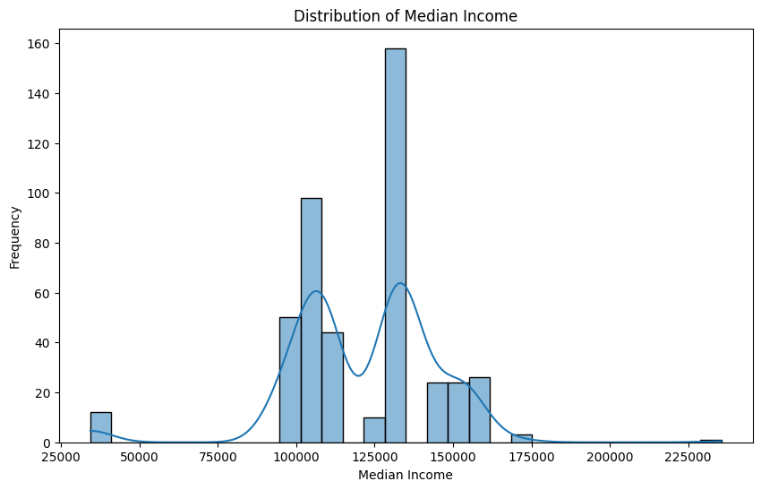
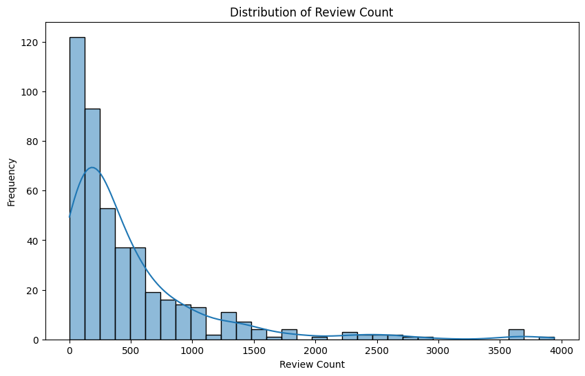

# importing all the necessary libraries for data cleaning
import pandas as pd
import os
import seaborn as sns
import matplotlib.pyplot as plt
import numpy as np
from scipy import statsData Cleaning
Introduction and Motivation
The purpose of this page and the code below is to clean and tidy the collected data. This is necessary to perform before working with the code in order to avoid errors and inconsistencies. Fully cleaning the data before performing exploratory data analysis and statistical methods will ensure that we are working with accurate information and will also improve efficiency of future work due to having to deal with a fewer number of minor errors. Our conclusion and insights could potential be incorrect or not as accurate as possible if the data is not properly cleaned.
For our purposes the data cleaning process will entail the following steps. Firstly, we will identify and handle pertinent missing data. Then, outliers will be identified, addressed, and visualized to understand how they are impacting the dataset and individuals distributions. The data types will be understood and corrected to fit the needs of our future analysis. Finally, the dataset will be inspected for troublesome skewness and will later be normalized and scaled in the supervised learning portion of this work (see Supervised Learning tab for this work).
The cleaned dataset will be outputted to use for future analysis, allowing for smooth and accurate work moving forward.
Code and Explanations
Working with the Scraped Yelp Data
This section is to clean and combine the yelp datasets in order to later combine it with the zipcode income data
# reading-in the one of the Yelp datasets
df = pd.read_csv("../../data/raw-data/df_bars1.csv")
df.head()| Unnamed: 0 | name | cuisine | price_range | rating | review_count | neighborhoods | latitude | longitude | zip_code | |
|---|---|---|---|---|---|---|---|---|---|---|
| 0 | 0 | Jane Jane | Cocktail Bars | $$ | 4.5 | 131 | NaN | 38.912817 | -77.03174 | 20009 |
| 1 | 1 | CODE RED | Cocktail Bars | $$ | 4.6 | 114 | NaN | 38.921680 | -77.04270 | 20009 |
| 2 | 2 | The Crown & Crow | Bars | $$ | 4.5 | 149 | NaN | 38.907830 | -77.03162 | 20005 |
| 3 | 3 | The Alchemist DC | Speakeasies | NaN | 4.2 | 82 | NaN | 38.916810 | -77.03099 | 20009 |
| 4 | 4 | Alegria | Bars | NaN | 4.4 | 29 | NaN | 38.922076 | -76.99657 | 20002 |
# setting the data directory
data_dir = "../../data/raw-data/"
# listing the files in the directory
file_names = os.listdir(data_dir)
# creating the paths to each of the files
file_path = [os.path.join(data_dir, file) for file in file_names if file.endswith(".csv")]
# creating one large file of all combined
df1 = pd.concat(map(pd.read_csv, file_path), ignore_index=True)
# saving the combined file of all the yelp pages
df1.to_csv("../../data/processed-data/combined_yelp.csv")df1 = df1.drop(['neighborhoods'], axis=1)
df1 = df1.drop(['Unnamed: 0'], axis=1)
df1 = df1.fillna(0)
df1.head()| name | cuisine | price_range | rating | review_count | latitude | longitude | zip_code | Label (Grouping) | District of Columbia!!Estimate | ... | ZCTA5 20551!!Estimate | ZCTA5 20551!!Margin of Error | ZCTA5 20560!!Estimate | ZCTA5 20560!!Margin of Error | ZCTA5 20565!!Estimate | ZCTA5 20565!!Margin of Error | ZCTA5 20566!!Estimate | ZCTA5 20566!!Margin of Error | ZCTA5 20591!!Estimate | ZCTA5 20591!!Margin of Error | |
|---|---|---|---|---|---|---|---|---|---|---|---|---|---|---|---|---|---|---|---|---|---|
| 0 | Simona cafe | Coffee & Tea | 0 | 4.2 | 31.0 | 38.906938 | -77.007667 | 20002.0 | 0 | 0 | ... | 0 | 0 | 0 | 0 | 0 | 0 | 0 | 0 | 0 | 0 |
| 1 | Gregorys Coffee | Coffee & Tea | $$ | 4.1 | 118.0 | 38.904302 | -77.039933 | 20036.0 | 0 | 0 | ... | 0 | 0 | 0 | 0 | 0 | 0 | 0 | 0 | 0 | 0 |
| 2 | For Five Coffee Roasters | Coffee & Tea | 0 | 3.4 | 28.0 | 38.901666 | -77.045230 | 20006.0 | 0 | 0 | ... | 0 | 0 | 0 | 0 | 0 | 0 | 0 | 0 | 0 | 0 |
| 3 | Grafika Coffee | Coffee & Tea | 0 | 5.0 | 1.0 | 38.907515 | -77.007494 | 20036.0 | 0 | 0 | ... | 0 | 0 | 0 | 0 | 0 | 0 | 0 | 0 | 0 | 0 |
| 4 | Gregorys Coffee | Coffee & Tea | $$ | 3.6 | 112.0 | 38.895950 | -77.021780 | 20004.0 | 0 | 0 | ... | 0 | 0 | 0 | 0 | 0 | 0 | 0 | 0 | 0 | 0 |
5 rows × 125 columns
# outputting the combined yelp data
df1.to_csv("../../data/processed-data/combined_yelp.csv")Working with the Zip Code Income Data
Here we have obtained the zip code and median income from the Census Buerau of United States. https://data.census.gov/profile?q=washington%20dc - Here is the link to obtain the data or to other Census Buerau related data. Census Buerau has other factors for all states, like poverty rate, employment, and median rent ranges from a vast time span. The Median Income for the zip codes was over aggreated over a five year span of 2018-2023.
Here we are cleaning the zipcode and median income dataset to make it ready for merging.
# reading in the zipcode dataset
zip_code = pd.read_csv("../../data/raw-data/ACSDT5Y2022.B19013-2024-11-29T205354.csv")
zip_code = zip_code.T # transposing it
# resetting the index
zip_code.reset_index(inplace=True)
# renaming the variables
zip_code.columns = ["Category", "Value"]
# displaying the dataframe
print(zip_code) Category \
0 Label (Grouping)
1 District of Columbia!!Estimate
2 District of Columbia!!Margin of Error
3 ZCTA5 20001!!Estimate
4 ZCTA5 20001!!Margin of Error
.. ...
112 ZCTA5 20565!!Margin of Error
113 ZCTA5 20566!!Estimate
114 ZCTA5 20566!!Margin of Error
115 ZCTA5 20591!!Estimate
116 ZCTA5 20591!!Margin of Error
Value
0 Median household income in the past 12 months ...
1 101,722
2 ±1,569
3 133,211
4 ±9,474
.. ...
112 **
113 -
114 **
115 -
116 **
[117 rows x 2 columns]# grabbing just the Median Income information
zip_code = zip_code[zip_code["Category"].str.contains("Margin of Error") == False]
zip_code.head()| Category | Value | |
|---|---|---|
| 0 | Label (Grouping) | Median household income in the past 12 months ... |
| 1 | District of Columbia!!Estimate | 101,722 |
| 3 | ZCTA5 20001!!Estimate | 133,211 |
| 5 | ZCTA5 20002!!Estimate | 107,130 |
| 7 | ZCTA5 20003!!Estimate | 155,054 |
# extractng the zipcodes
zip_code['ZIP_Code'] = zip_code['Category'].str.extract(r'ZCTA5 (\d{5})')
zip_code.head()| Category | Value | ZIP_Code | |
|---|---|---|---|
| 0 | Label (Grouping) | Median household income in the past 12 months ... | NaN |
| 1 | District of Columbia!!Estimate | 101,722 | NaN |
| 3 | ZCTA5 20001!!Estimate | 133,211 | 20001 |
| 5 | ZCTA5 20002!!Estimate | 107,130 | 20002 |
| 7 | ZCTA5 20003!!Estimate | 155,054 | 20003 |
#dropping first column
list(zip_code)
zip_code = zip_code.drop('Category', axis=1)
zip_code.head()| Value | ZIP_Code | |
|---|---|---|
| 0 | Median household income in the past 12 months ... | NaN |
| 1 | 101,722 | NaN |
| 3 | 133,211 | 20001 |
| 5 | 107,130 | 20002 |
| 7 | 155,054 | 20003 |
# dropping the first two rows that contain words
zip_code = zip_code.iloc[2:, :]
zip_code.head()| Value | ZIP_Code | |
|---|---|---|
| 3 | 133,211 | 20001 |
| 5 | 107,130 | 20002 |
| 7 | 155,054 | 20003 |
| 9 | 152,955 | 20004 |
| 11 | 109,147 | 20005 |
# renaming the columns for clarity
zip_code.columns = ['Median_Income', 'zip_code']
zip_code| Median_Income | zip_code | |
|---|---|---|
| 3 | 133,211 | 20001 |
| 5 | 107,130 | 20002 |
| 7 | 155,054 | 20003 |
| 9 | 152,955 | 20004 |
| 11 | 109,147 | 20005 |
| 13 | 34,352 | 20006 |
| 15 | 145,048 | 20007 |
| 17 | 123,134 | 20008 |
| 19 | 132,374 | 20009 |
| 21 | 106,560 | 20010 |
| 23 | 97,327 | 20011 |
| 25 | 110,375 | 20012 |
| 27 | 235,511 | 20015 |
| 29 | 169,489 | 20016 |
| 31 | 97,507 | 20017 |
| 33 | 87,552 | 20018 |
| 35 | 53,394 | 20019 |
| 37 | 48,106 | 20020 |
| 39 | 97,694 | 20024 |
| 41 | 47,871 | 20032 |
| 43 | 106,930 | 20036 |
| 45 | 94,820 | 20037 |
| 47 | - | 20045 |
| 49 | - | 20052 |
| 51 | - | 20057 |
| 53 | - | 20059 |
| 55 | - | 20064 |
| 57 | - | 20204 |
| 59 | - | 20220 |
| 61 | - | 20230 |
| 63 | - | 20240 |
| 65 | - | 20245 |
| 67 | - | 20250 |
| 69 | - | 20260 |
| 71 | - | 20317 |
| 73 | - | 20319 |
| 75 | - | 20373 |
| 77 | - | 20388 |
| 79 | - | 20390 |
| 81 | - | 20408 |
| 83 | - | 20415 |
| 85 | - | 20418 |
| 87 | - | 20422 |
| 89 | - | 20427 |
| 91 | - | 20431 |
| 93 | - | 20510 |
| 95 | - | 20515 |
| 97 | - | 20520 |
| 99 | - | 20530 |
| 101 | - | 20535 |
| 103 | - | 20540 |
| 105 | - | 20542 |
| 107 | - | 20551 |
| 109 | - | 20560 |
| 111 | - | 20565 |
| 113 | - | 20566 |
| 115 | - | 20591 |
# keeping only the rows with observations (0 to 45)
zip_code = zip_code.iloc[:46]
zip_code = zip_code[zip_code["Median_Income"].str.contains("-") == False]
print(zip_code) Median_Income zip_code
3 133,211 20001
5 107,130 20002
7 155,054 20003
9 152,955 20004
11 109,147 20005
13 34,352 20006
15 145,048 20007
17 123,134 20008
19 132,374 20009
21 106,560 20010
23 97,327 20011
25 110,375 20012
27 235,511 20015
29 169,489 20016
31 97,507 20017
33 87,552 20018
35 53,394 20019
37 48,106 20020
39 97,694 20024
41 47,871 20032
43 106,930 20036
45 94,820 20037print(zip_code)
# outputting the cleaned zip code and median income data
zip_code.to_csv('../../data/processed-data/zip_code.csv') Median_Income zip_code
3 133,211 20001
5 107,130 20002
7 155,054 20003
9 152,955 20004
11 109,147 20005
13 34,352 20006
15 145,048 20007
17 123,134 20008
19 132,374 20009
21 106,560 20010
23 97,327 20011
25 110,375 20012
27 235,511 20015
29 169,489 20016
31 97,507 20017
33 87,552 20018
35 53,394 20019
37 48,106 20020
39 97,694 20024
41 47,871 20032
43 106,930 20036
45 94,820 20037Merging Yelp and Zipcode/Income
We will now merge the two cleaned dataset into one.
# reading and checking both datasets
df1 = pd.read_csv("../../data/processed-data/zip_code.csv")
df2 = pd.read_csv("../../data/processed-data/combined_yelp.csv")
print(df1)
print(df2) Unnamed: 0 Median_Income zip_code
0 3 133,211 20001
1 5 107,130 20002
2 7 155,054 20003
3 9 152,955 20004
4 11 109,147 20005
5 13 34,352 20006
6 15 145,048 20007
7 17 123,134 20008
8 19 132,374 20009
9 21 106,560 20010
10 23 97,327 20011
11 25 110,375 20012
12 27 235,511 20015
13 29 169,489 20016
14 31 97,507 20017
15 33 87,552 20018
16 35 53,394 20019
17 37 48,106 20020
18 39 97,694 20024
19 41 47,871 20032
20 43 106,930 20036
21 45 94,820 20037
Unnamed: 0 name cuisine price_range \
0 0 Simona cafe Coffee & Tea 0
1 1 Gregorys Coffee Coffee & Tea $$
2 2 For Five Coffee Roasters Coffee & Tea 0
3 3 Grafika Coffee Coffee & Tea 0
4 4 Gregorys Coffee Coffee & Tea $$
.. ... ... ... ...
746 746 Fight Club Bars $$
747 747 Stable DC Modern European $$
748 748 Tamashaa Indian 0
749 749 The Park at 14th Bars $$
750 750 Emissary Coffee & Tea $$
rating review_count latitude longitude zip_code Label (Grouping) \
0 4.2 31.0 38.906938 -77.007667 20002.0 0
1 4.1 118.0 38.904302 -77.039933 20036.0 0
2 3.4 28.0 38.901666 -77.045230 20006.0 0
3 5.0 1.0 38.907515 -77.007494 20036.0 0
4 3.6 112.0 38.895950 -77.021780 20004.0 0
.. ... ... ... ... ... ...
746 4.0 470.0 38.884784 -76.997326 20003.0 0
747 4.6 348.0 38.900399 -76.987348 20002.0 0
748 4.4 47.0 38.929705 -77.032287 20010.0 0
749 3.7 1297.0 38.901922 -77.032275 20005.0 0
750 4.0 537.0 38.909510 -77.046380 20036.0 0
... ZCTA5 20551!!Estimate ZCTA5 20551!!Margin of Error \
0 ... 0 0
1 ... 0 0
2 ... 0 0
3 ... 0 0
4 ... 0 0
.. ... ... ...
746 ... 0 0
747 ... 0 0
748 ... 0 0
749 ... 0 0
750 ... 0 0
ZCTA5 20560!!Estimate ZCTA5 20560!!Margin of Error ZCTA5 20565!!Estimate \
0 0 0 0
1 0 0 0
2 0 0 0
3 0 0 0
4 0 0 0
.. ... ... ...
746 0 0 0
747 0 0 0
748 0 0 0
749 0 0 0
750 0 0 0
ZCTA5 20565!!Margin of Error ZCTA5 20566!!Estimate \
0 0 0
1 0 0
2 0 0
3 0 0
4 0 0
.. ... ...
746 0 0
747 0 0
748 0 0
749 0 0
750 0 0
ZCTA5 20566!!Margin of Error ZCTA5 20591!!Estimate \
0 0 0
1 0 0
2 0 0
3 0 0
4 0 0
.. ... ...
746 0 0
747 0 0
748 0 0
749 0 0
750 0 0
ZCTA5 20591!!Margin of Error
0 0
1 0
2 0
3 0
4 0
.. ...
746 0
747 0
748 0
749 0
750 0
[751 rows x 126 columns]# outer merging the datsets
merge_df = pd.merge(df1,df2,on ="zip_code",how="outer")
merge_df = merge_df.fillna(0) # fill missing with zeros# dropping the unnecessary columns
merge_df = merge_df.drop(['Unnamed: 0_x','Unnamed: 0_y'], axis=1)
merge_df.head()| Median_Income | zip_code | name | cuisine | price_range | rating | review_count | latitude | longitude | Label (Grouping) | ... | ZCTA5 20551!!Estimate | ZCTA5 20551!!Margin of Error | ZCTA5 20560!!Estimate | ZCTA5 20560!!Margin of Error | ZCTA5 20565!!Estimate | ZCTA5 20565!!Margin of Error | ZCTA5 20566!!Estimate | ZCTA5 20566!!Margin of Error | ZCTA5 20591!!Estimate | ZCTA5 20591!!Margin of Error | |
|---|---|---|---|---|---|---|---|---|---|---|---|---|---|---|---|---|---|---|---|---|---|
| 0 | 0 | 0.0 | 0 | 0 | 0 | 0.0 | 0.0 | 0.000000 | 0.000000 | Median household income in the past 12 months ... | ... | - | ** | - | ** | - | ** | - | ** | - | ** |
| 1 | 0 | 20000.0 | Lapop | Coffee & Tea | $$ | 4.1 | 38.0 | 38.921329 | -77.043835 | 0 | ... | 0 | 0 | 0 | 0 | 0 | 0 | 0 | 0 | 0 | 0 |
| 2 | 0 | 20000.0 | Lapop | Coffee & Tea | $$ | 4.1 | 38.0 | 38.921329 | -77.043835 | 0 | ... | 0 | 0 | 0 | 0 | 0 | 0 | 0 | 0 | 0 | 0 |
| 3 | 133,211 | 20001.0 | Compass Coffee | Coffee & Tea | $$ | 4.1 | 92.0 | 38.916256 | -77.022773 | 0 | ... | 0 | 0 | 0 | 0 | 0 | 0 | 0 | 0 | 0 | 0 |
| 4 | 133,211 | 20001.0 | Marianne’s by DC Central Kitchen | Cafes | 0 | 4.6 | 17.0 | 38.898720 | -77.024770 | 0 | ... | 0 | 0 | 0 | 0 | 0 | 0 | 0 | 0 | 0 | 0 |
5 rows × 126 columns
# saving this merged dataset
merge_df.to_csv('../../data/processed-data/yelp_zip.csv')# reading in the combined dataset and keeping necessary columns
yelp_zip = pd.read_csv("../../data/processed-data/yelp_zip.csv")
yelp_zip = yelp_zip[['Median_Income', 'zip_code', 'name', 'cuisine', 'price_range', 'rating', 'review_count', 'latitude', 'longitude']]
print(yelp_zip.head(5)) Median_Income zip_code name cuisine \
0 0 0.0 0 0
1 0 20000.0 Lapop Coffee & Tea
2 0 20000.0 Lapop Coffee & Tea
3 133,211 20001.0 Compass Coffee Coffee & Tea
4 133,211 20001.0 Marianne’s by DC Central Kitchen Cafes
price_range rating review_count latitude longitude
0 0 0.0 0.0 0.000000 0.000000
1 $$ 4.1 38.0 38.921329 -77.043835
2 $$ 4.1 38.0 38.921329 -77.043835
3 $$ 4.1 92.0 38.916256 -77.022773
4 0 4.6 17.0 38.898720 -77.024770 Data Type Correction and Formatting:
In this section, variables are numerized and a price variable is created based on the Yelp price ranges given on their website. The cuisine variable will be combined into fewer categories for use in later analysis.
# check that the variables are correct type
print(yelp_zip.dtypes)
# making median income numeric
yelp_zip['Median_Income'] = yelp_zip['Median_Income'].str.replace(",", "")
yelp_zip['Median_Income'] = pd.to_numeric(yelp_zip['Median_Income'])
print(yelp_zip.dtypes)Median_Income object
zip_code float64
name object
cuisine object
price_range object
rating float64
review_count float64
latitude float64
longitude float64
dtype: object
Median_Income int64
zip_code float64
name object
cuisine object
price_range object
rating float64
review_count float64
latitude float64
longitude float64
dtype: object# encoding the price_range variable (number is the amount of dollar signs)
# just needed something numeric for price
def price_conversion(price):
if price == "$":
return 1
elif price == "$$":
return 2
elif price == "$$$":
return 3
elif price == "$$$$":
return 4
else:
return 0
yelp_zip['price_range'] = yelp_zip['price_range'].apply(price_conversion)
# There are a good amount of zeros, so will drop these:
yelp_zip = yelp_zip[yelp_zip['price_range'] != 0]
# numerizing the price_range variable:
# used the avergae of the ranges given by Yelp
price_range_values = yelp_zip['price_range'].unique()
def price_conversion(price):
if price <= 1:
return 5
elif price <= 2:
return 20.5
elif price <= 3:
return 45.5
elif price <= 4:
return 61
else:
return 0
yelp_zip['price'] = yelp_zip['price_range'].apply(price_conversion)
print(yelp_zip.head(5)) Median_Income zip_code name cuisine \
1 0 20000.0 Lapop Coffee & Tea
2 0 20000.0 Lapop Coffee & Tea
3 133211 20001.0 Compass Coffee Coffee & Tea
5 133211 20001.0 Sankofa Video Books & Cafe Bookstores
6 133211 20001.0 La Colombe Coffee Coffee & Tea
price_range rating review_count latitude longitude price
1 2 4.1 38.0 38.921329 -77.043835 20.5
2 2 4.1 38.0 38.921329 -77.043835 20.5
3 2 4.1 92.0 38.916256 -77.022773 20.5
5 1 4.5 167.0 38.925561 -77.023150 5.0
6 2 4.0 303.0 38.901051 -77.020103 20.5 # dropping cuisines that are zero
yelp_zip = yelp_zip[yelp_zip['cuisine'] != "0"]
# investigating the cuisine variable
cuisine_values = yelp_zip['cuisine'].unique()
print(cuisine_values)['Coffee & Tea' 'Bookstores' 'Bakeries' 'Cafes' 'Breakfast & Brunch'
'New American' 'Bars' 'Italian' 'Mexican' 'Peruvian' 'French' 'Pubs'
'Chinese' 'Greek' 'Spanish' 'Thai' 'Latin American' 'Japanese' 'Ramen'
'Persian/Iranian' 'Burgers' 'Korean' 'Sandwiches' 'Sports Bars'
'American' 'Delis' 'Puerto Rican' 'Modern European' 'Salvadoran'
'Asian Fusion' 'Cocktail Bars' 'Irish' 'Dive Bars' 'Beer Gardens'
'Dance Clubs' 'Pool Halls' 'Music Venues' 'Wine Bars' 'Lounges'
'Bubble Tea' 'Pizza' 'Trinidadian' 'Laotian' 'Sushi Bars' 'Mediterranean'
'Steakhouses' 'Cultural Center' 'Seafood' 'Distilleries' 'Breweries'
'Herbs & Spices' 'Indian' 'Southern' 'British' 'Mini Golf'
'Juice Bars & Smoothies' 'Coffee Roasteries' 'Tapas/Small Plates'
'Cantonese' 'Bagels' 'Venezuelan' 'Whiskey Bars' 'Gay Bars' 'Vietnamese'
'Creperies' 'Ukrainian' 'Noodles' 'Belgian' 'Jazz & Blues' 'Dim Sum'
'Scandinavian' 'Desserts' 'Vinyl Records' 'Barbeque' 'Brasseries'
'Moroccan' 'Afghan' 'Beer Bar' 'Tiki Bars' 'Filipino'
'Himalayan/Nepalese' 'Tacos' 'Salad' 'Lebanese' 'Fish & Chips' 'Falafel'
'Szechuan' 'Egyptian' 'German' 'Shared Office Spaces' 'Pan Asian']# grouping cuisine types together to make fewer categories
def categorize_cuisine(cuisine):
cafes = ['Coffee & Tea', 'Cafes', 'Coffee Roasteries', 'Bubble Tea', 'Juice Bars & Smoothies', 'Themed Cafes', 'Art Classes', 'Bookstores', 'Vinyl Records', 'Pet Adoption', 'Banks & Credit Unions', 'Shared Office Spaces', 'Hong Kong Style Cafe', 'Bakeries', 'Desserts', 'Chocolatiers & Shops', 'Creperies', 'Herbs & Spices']
bars = ['Bars', 'Cocktail Bars', 'Sports Bars', 'Dive Bars', 'Speakeasies', 'Beer Gardens', 'Wine Bars', 'Tiki Bars', 'Whiskey Bars', 'Gay Bars', 'Irish Pub', 'Piano Bars', 'Jazz & Blues', 'Beer Bar', 'Pubs', 'Swimming Pools', 'Barbers', 'Lounges']
european = ['Italian', 'French', 'Greek', 'Turkish', 'Mediterranean', 'Moroccan', 'Spanish', 'Irish', 'British', 'German', 'Belgian', 'Scandinavian', 'Modern European', 'Ukrainian', 'Georgian', 'Brasseries']
asian = ['Chinese', 'Szechuan', 'Cantonese', 'Japanese', 'Korean', 'Thai', 'Vietnamese', 'Filipino', 'Malaysian', 'Himalayan/Nepalese', 'Dim Sum', 'Laotian', 'Asian Fusion', 'Pan Asian', 'Sushi Bars', 'Seafood', 'Ramen', 'Noodles']
middle_eastern = ['Indian', 'Afghan', 'Persian/Iranian', 'Lebanese', 'Egyptian', 'Ethiopian', 'Falafel']
latin = ['Mexican', 'Peruvian', 'Salvadoran', 'Venezuelan', 'Puerto Rican', 'Trinidadian', 'Brazilian', 'Latin American', 'Caribbean', 'Tacos', 'Tapas/Small Plates']
american = ['Public Markets', 'Pizza', 'New American', 'Burgers', 'Barbeque', 'American', 'Southern', 'Vegan', 'Steakhouses']
breakfast_lunch = ['Breakfast & Brunch', 'Specialty Food', 'Bagels', 'Salad', 'Sandwiches', 'Fish & Chips', 'Delis']
entertainment = ['Music Venues', 'Dance Clubs', 'Karaoke', 'Pool Halls', 'Performing Arts', 'Cultural Center', 'Golf', 'Mini Golf']
retail = ['Distilleries', 'Beer, Wine & Spirits', 'Breweries', 'Cheese Shops']
if cuisine in cafes:
return 'cafes'
elif cuisine in bars:
return 'bars'
elif cuisine in european:
return 'european'
elif cuisine in asian:
return 'asian'
elif cuisine in middle_eastern:
return 'middle_eastern'
elif cuisine in latin:
return 'latin'
elif cuisine in american:
return 'american'
elif cuisine in breakfast_lunch:
return 'breakfast'
elif cuisine in entertainment:
return 'entertainment'
elif cuisine in retail:
return 'retail'
else:
return 'other'
yelp_zip['cuisine_cat'] = yelp_zip['cuisine'].apply(categorize_cuisine)Missing Value Handling
Missing values are dropped for rating and median income variables and were previously dropped for the price variable.
# Finding missing values
missing_values = yelp_zip.isnull().sum()
print(missing_values)
# count of missing values in price (zeros)
price_counts = yelp_zip['price'].value_counts()
print(price_counts)
# count of missing values in income (zeros)
price_counts = yelp_zip['Median_Income'].value_counts()
print(price_counts)
# count of missing values in zipcode (zeros)
price_counts = yelp_zip['zip_code'].value_counts()
print(price_counts)
# count of missing values in review number (zeros)
price_counts = yelp_zip['review_count'].value_counts()
print(price_counts)
# count of missing values in rating (zeros)
price_counts = yelp_zip['rating'].value_counts()
print(price_counts)
# plot of missing rating values
# Scatter plot of restaurant names and ratings
plt.figure(figsize=(12, 6))
sns.scatterplot(data=yelp_zip, x='name', y='rating', hue=(yelp_zip['rating'] == 0), palette={True: 'red', False: 'blue'})
plt.xticks(rotation=90, fontsize=0) # Rotate x-axis labels and set font size
plt.title('Scatter plot of Missing Ratings by Restaurant')
plt.xlabel('Restaurant Names')
plt.ylabel('Ratings')
plt.legend(title='Rating is Zero', loc='upper right', labels=['Non-zero', 'Zero'])
plt.show()
# dropping the rows that have a zero for 'rating'
yelp_zip = yelp_zip[yelp_zip['rating'] != 0]
# deleting the zero values for Median_Income
yelp_zip = yelp_zip[yelp_zip['Median_Income'] != 0]
price_counts = yelp_zip['rating'].value_counts()
print(price_counts)
# plot after fixing the missing ratings
plt.figure(figsize=(12, 6))
sns.scatterplot(data=yelp_zip, x='name', y='rating', hue=(yelp_zip['rating'] == 0), palette={True: 'red', False: 'blue'})
plt.xticks(rotation=90, fontsize=0) # Rotate x-axis labels and set font size
plt.title('Scatter plot of Ratings by Restaurant After Handling Missing Values')
plt.xlabel('Restaurant Names')
plt.ylabel('Ratings')
plt.legend(title='Rating is Zero', loc='upper right', labels=['Non-zero', 'Zero'])
plt.show()Median_Income 0
zip_code 0
name 0
cuisine 0
price_range 0
rating 0
review_count 0
latitude 0
longitude 0
price 0
cuisine_cat 0
dtype: int64
price
20.5 387
45.5 59
5.0 52
61.0 7
Name: count, dtype: int64
Median_Income
133211 105
107130 58
132374 55
0 47
109147 45
145048 27
155054 26
97694 25
106930 25
152955 24
106560 15
34352 13
94820 12
123134 10
97507 7
97327 6
169489 3
235511 1
110375 1
Name: count, dtype: int64
zip_code
20001.0 105
20002.0 58
20009.0 55
20005.0 45
20007.0 27
20003.0 26
20024.0 25
20036.0 25
20004.0 24
20010.0 15
20006.0 13
20037.0 12
20008.0 10
20017.0 7
20011.0 6
22201.0 6
20910.0 4
22202.0 4
20016.0 3
22203.0 3
22314.0 3
20000.0 2
20735.0 2
20052.0 2
20560.0 2
22209.0 2
22003.0 2
20814.0 2
20781.0 2
20740.0 2
20012.0 1
20045.0 1
20015.0 1
20737.0 1
20057.0 1
20852.0 1
20902.0 1
20912.0 1
22204.0 1
22205.0 1
22304.0 1
Name: count, dtype: int64
review_count
57.0 7
74.0 5
106.0 4
25.0 4
95.0 4
..
48.0 1
255.0 1
116.0 1
105.0 1
240.0 1
Name: count, Length: 351, dtype: int64
rating
4.3 68
4.1 57
4.4 55
4.0 54
4.2 47
3.9 44
3.8 36
4.5 33
4.6 24
3.5 14
3.3 11
3.4 11
3.7 11
4.7 9
3.6 9
4.8 9
2.9 5
3.1 2
5.0 2
3.0 2
4.9 1
3.2 1
Name: count, dtype: int64
rating
4.3 61
4.1 53
4.0 53
4.4 48
4.2 46
3.9 41
3.8 36
4.5 29
4.6 16
3.3 11
3.5 11
3.4 10
3.7 10
3.6 8
4.7 7
4.8 7
2.9 5
3.0 2
3.1 1
4.9 1
5.0 1
3.2 1
Name: count, dtype: int64
Outlier Detection and Treatment
In this section, outliers are found for the numeric variables and removed for the review count variable, but retained for the other variables. This is because there were no overlapping outliers or clear issues with the outliers skewing the data for income and rating, thus, they were left in the dataset.
# Outlier Detection using Z-Score
# Median Income (Median_Income)
yelp_zip['income_zscore'] = stats.zscore(yelp_zip['Median_Income'])
zscore_outliers = yelp_zip[(yelp_zip['income_zscore'] < -3) | (yelp_zip['income_zscore'] > 3)]
print("Z-score income outliers:", zscore_outliers)
# yields one outlier: Open City at the National Cathedral in zip: 20015
# # Rating (rating)
yelp_zip['rating_zscore'] = stats.zscore(yelp_zip['rating'])
zscore_outliers = yelp_zip[(yelp_zip['rating_zscore'] < -3) | (yelp_zip['rating_zscore'] > 3)]
print("Z-score rating outliers:", zscore_outliers)
# 6 rating outliers all with scores lower than 3.0
# # Review Count (review_count)
yelp_zip['review_zscore'] = stats.zscore(yelp_zip['review_count'])
zscore_outliers = yelp_zip[(yelp_zip['review_zscore'] < -3) | (yelp_zip['review_zscore'] > 3)]
print("Z-score review outliers:", zscore_outliers)
# for our purposes the review_count outliers are removed after visualiatization:
# Visualizing the Outliers with boxplots
# Median Income Boxplot
plt.figure(figsize=(10, 6))
sns.boxplot(x=yelp_zip['Median_Income'])
plt.title('Boxplot of Median Income')
plt.xlabel('Median Income')
plt.show()
# Ratings Boxplot
plt.figure(figsize=(10, 6))
sns.boxplot(x=yelp_zip['rating'])
plt.title('Boxplot of Yelp Ratings')
plt.xlabel('Rating')
plt.show()
# Review count Boxplot
plt.figure(figsize=(10, 6))
sns.boxplot(x=yelp_zip['review_count'])
plt.title('Boxplot of Review Counts')
plt.xlabel('Review Count')
plt.show()
# Price Boxplot
plt.figure(figsize=(10, 6))
sns.boxplot(x=yelp_zip['price'])
plt.title('Boxplot of Price')
plt.xlabel('price')
plt.show()
# remove the review count outliers:
yelp_zip = yelp_zip[(yelp_zip['review_zscore'] >= -3) & (yelp_zip['review_zscore'] <= 3)]
cols_to_drop = ['rating_zscore', 'review_zscore', 'income_zscore']
yelp_zip = yelp_zip.drop(columns=cols_to_drop)
# Review count Boxplot
plt.figure(figsize=(10, 6))
sns.boxplot(x=yelp_zip['review_count'])
plt.title('Boxplot of Review Counts After Removing Outliers')
plt.xlabel('Review Count')
plt.show()Z-score income outliers: Median_Income zip_code name \
382 34352 20006.0 Filter Coffeehouse Foggy Bottom
383 34352 20006.0 Swing Coffee Roasters
384 34352 20006.0 Compass Coffee
386 34352 20006.0 Tatte Bakery & Cafe
388 34352 20006.0 La Colombe Coffee
389 34352 20006.0 Peet's Coffee
390 34352 20006.0 54 Restaurant
392 34352 20006.0 Founding Farmers - Washington
394 34352 20006.0 Off The Record
395 34352 20006.0 Immigrant Food at The White House
396 34352 20006.0 Off The Record
398 34352 20006.0 Blackfinn Ameripub - DC
399 34352 20006.0 Duke's Grocery
593 235511 20015.0 Open City At the National Cathedral
cuisine price_range rating review_count latitude longitude \
382 Coffee & Tea 2 4.1 140.0 38.901188 -77.044282
383 Coffee & Tea 1 4.2 239.0 38.898096 -77.039904
384 Coffee & Tea 1 4.1 123.0 38.901043 -77.041429
386 Coffee & Tea 2 4.3 98.0 38.901248 -77.038866
388 Coffee & Tea 1 4.2 103.0 38.901190 -77.040157
389 Coffee & Tea 2 3.8 108.0 38.899230 -77.039980
390 Vietnamese 2 4.4 157.0 38.895764 -77.028640
392 American 2 4.0 17388.0 38.900366 -77.044435
394 Bars 3 4.1 409.0 38.900510 -77.037000
395 New American 2 4.2 232.0 38.899310 -77.040139
396 Bars 3 4.1 409.0 38.900510 -77.037000
398 Sports Bars 2 3.4 665.0 38.901060 -77.037500
399 Burgers 2 3.9 393.0 38.900516 -77.046014
593 Cafes 2 3.8 150.0 38.929811 -77.071355
price cuisine_cat income_zscore
382 20.5 cafes -3.621439
383 5.0 cafes -3.621439
384 5.0 cafes -3.621439
386 20.5 cafes -3.621439
388 5.0 cafes -3.621439
389 20.5 cafes -3.621439
390 20.5 asian -3.621439
392 20.5 american -3.621439
394 45.5 bars -3.621439
395 20.5 american -3.621439
396 45.5 bars -3.621439
398 20.5 bars -3.621439
399 20.5 american -3.621439
593 20.5 cafes 4.734567
Z-score rating outliers: Median_Income zip_code name cuisine \
23 133211 20001.0 Corner Bakery Bakeries
447 123134 20008.0 Morsel's Coffee & Tea
454 123134 20008.0 Harry's Pub Pubs
455 123134 20008.0 Harry's Pub Pubs
618 97694 20024.0 Casey's Coffee & Sandwiches Coffee & Tea
636 97694 20024.0 Boardwalk Bar & Arcade Bars
672 106930 20036.0 The Rooftop Lounges
price_range rating review_count latitude longitude price \
23 2 2.9 205.0 38.896568 -77.009497 20.5
447 3 3.0 3.0 38.922855 -77.053824 45.5
454 2 2.9 57.0 38.924394 -77.054888 20.5
455 2 2.9 57.0 38.924394 -77.054888 20.5
618 2 2.9 25.0 38.883440 -77.016027 20.5
636 2 3.0 192.0 38.878480 -77.023990 20.5
672 3 2.9 104.0 38.910810 -77.045650 45.5
cuisine_cat income_zscore rating_zscore
23 cafes 0.485095 -3.307778
447 cafes 0.066504 -3.030515
454 bars 0.066504 -3.307778
455 bars 0.066504 -3.307778
618 cafes -0.990256 -3.307778
636 bars -0.990256 -3.030515
672 bars -0.606599 -3.307778
Z-score review outliers: Median_Income zip_code name cuisine \
45 133211 20001.0 Zaytinya Greek
341 109147 20005.0 Old Ebbitt Grill Bars
364 109147 20005.0 Old Ebbitt Grill Bars
392 34352 20006.0 Founding Farmers - Washington American
408 145048 20007.0 Baked & Wired Bakeries
424 145048 20007.0 Founding Farmers Fishers & Bakers New American
426 145048 20007.0 il Canale Italian
502 132374 20009.0 Le Diplomate Brasseries
price_range rating review_count latitude longitude price \
45 3 4.2 6001.0 38.899040 -77.023490 45.5
341 2 4.2 11058.0 38.897967 -77.033342 20.5
364 2 4.2 11059.0 38.897967 -77.033342 20.5
392 2 4.0 17388.0 38.900366 -77.044435 20.5
408 2 4.4 5248.0 38.903913 -77.060248 20.5
424 2 3.8 4913.0 38.901784 -77.059733 20.5
426 2 4.3 4908.0 38.904493 -77.060974 20.5
502 3 4.3 5414.0 38.911350 -77.031570 45.5
cuisine_cat income_zscore rating_zscore review_zscore
45 european 0.485095 0.296635 4.104401
341 bars -0.514506 0.296635 7.966897
364 bars -0.514506 0.296635 7.967661
392 american -3.621439 -0.257890 12.801700
408 cafes 0.976796 0.851159 3.529266
424 american 0.976796 -0.812415 3.273395
426 european 0.976796 0.573897 3.269576
502 european 0.450327 0.573897 3.656055 




Normalization and Scaling
In this section we the distributions of the numerical variables, identifying skewness particularly. We will normalize the data in later analysis.
# Normalization and Scaling
# checking the skewness of the numeric variables
skewness = yelp_zip[['Median_Income', 'price_range', 'rating', 'review_count', 'latitude', 'longitude', 'price']].skew()
print(skewness)
# median income and review_count are highly skewed
# plotting the skewed distributions
plt.figure(figsize=(10, 6))
sns.histplot(yelp_zip['Median_Income'], kde=True)
plt.title('Distribution of Median Income')
plt.xlabel('Median Income')
plt.ylabel('Frequency')
plt.show()
# negatively skewed
plt.figure(figsize=(10, 6))
sns.histplot(yelp_zip['review_count'], kde=True)
plt.title('Distribution of Review Count')
plt.xlabel('Review Count')
plt.ylabel('Frequency')
plt.show()
# positively skewedMedian_Income -0.829417
price_range 0.765710
rating -0.706162
review_count 2.780277
latitude 0.646110
longitude -0.290954
price 1.412297
dtype: float64

# outputting the cleaned dataset
yelp_zip.to_csv("clean_yelp_zip.csv")Summary and Interpretation of Results
We have now dealt with the main and pressing issues of the dataset, so that it is ready for further analysis. The first step was reading in the sraped datasets and dealing with merging them into one complete dataset. The main issue resolved after merging was the issue of datatypes, particularly for the price variable. Initially, this variable was a string variable giving the price range score given by Yelp. We encoded this value based on the number of dollar-signs given as well as computed the average price in that range given by the Yelp price ranges on their website in the price_range variable. Both price and price_range are now categorical. The cuisine variable, which was categorical, was utilized to make a new variable, cuisine_cat, that groups the cuisine categories together to make it cleaner and easier to visualize in analysis (this was done with the aid of AI and through judgemnet decisions). We also dealt with missing values in the price and cuisine variables by removing these rows from the dataset. Additionally, we removed the z-score statistical outliers present in the review count variable. We finally checked for skewness, finding no immediately worrisome results and held off on normalization of the data. We are now ready to tackle Supervised and Unsupervised learning.